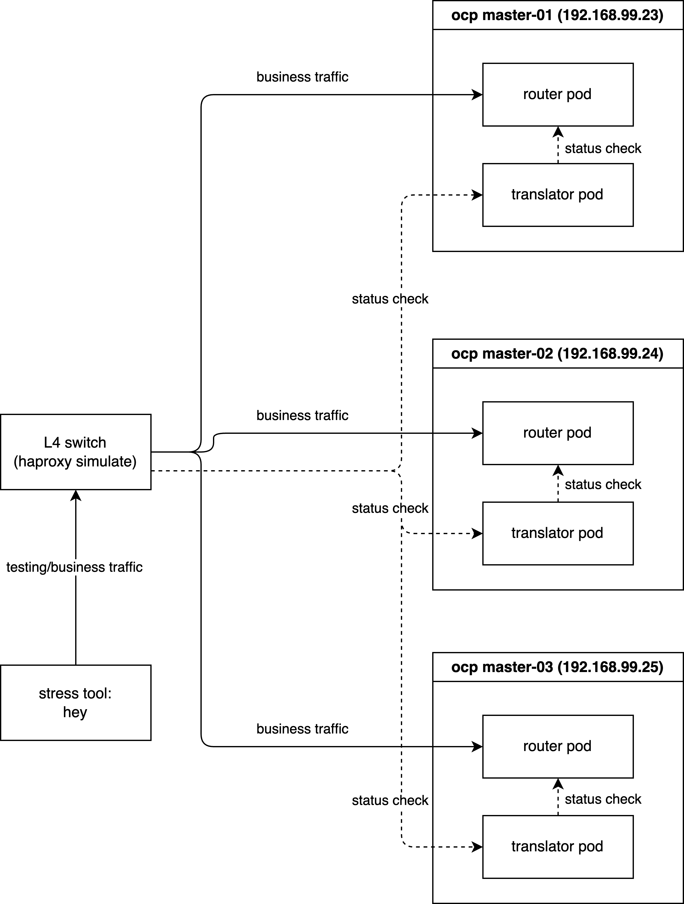
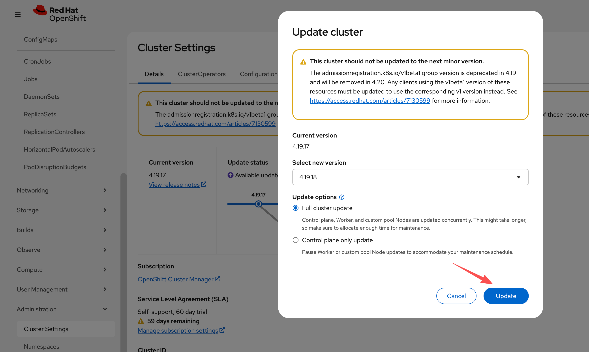
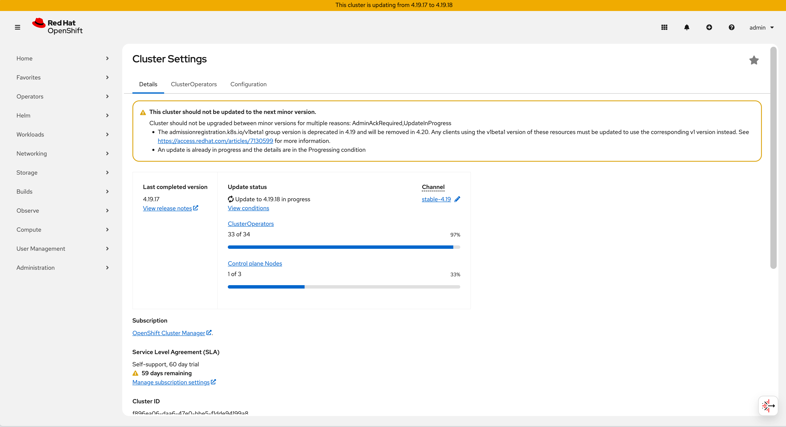
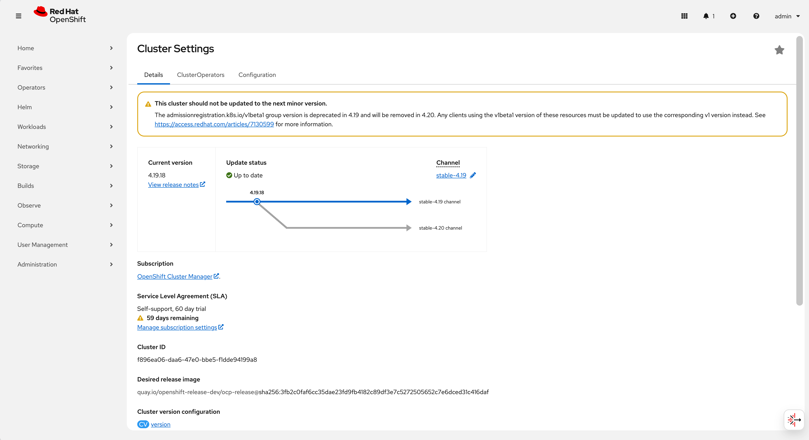

Implementing Layer 4 Switch as Ingress Gateway for OpenShift: Challenges and Solutions
1. Executive Summary
In standard enterprise OpenShift deployments, utilizing a
Layer 7 (L7) Load Balancer in front of the OpenShift Router
(Ingress Controller) is the recommended best practice. L7 Load
Balancers can inspect application-layer data, allowing them to
query specific health endpoints (e.g.,
HTTP GET /healthz/ready). This ensures traffic is
distributed only to router pods that are fully initialized and
capable of processing requests.
However, real-world infrastructure constraints often dictate the use of Layer 4 (L4) switches. Unlike their L7 counterparts, L4 switches operate at the transport layer and typically rely on simple TCP connection attempts (SYN/ACK) to determine backend availability. This limitation creates a critical race condition during router pod lifecycles (scaling, restarts, or upgrades):
- Premature Traffic Routing: When a new Router Pod starts, the container’s network stack and operating system immediately open the listening ports (80/443).
- False Positive Health Check: The L4 switch detects the open TCP port and immediately marks the backend as “UP”.
- Service Unavailability: The application layer (HAProxy) within the pod may still be initializing (loading certificates, parsing configurations) and is not yet ready to serve traffic.
- Request Failures: Client traffic routed to this unready pod results in connection resets or HTTP 503 errors.
To overcome this limitation without requiring costly infrastructure upgrades to L7 hardware, we present a solution: the “Sidecar Health Check Translator”. This architecture introduces a lightweight daemon that bridges the gap between the Router’s internal L7 status and the L4 switch’s TCP-based expectations.
2. Technical Architecture & Solution Design
The proposed solution deploys a daemon (DaemonSet) on every node hosting an OpenShift Router. This “Sidecar” agent acts as a proxy for health status.
Functional Logic
- Monitor (L7): The daemon continuously polls
the local Router’s application health endpoint
(
http://localhost:1936/healthz/ready). - Translate (Logic):
- Healthy State: If the router returns
200 OK, the daemon opens a dedicated TCP port (e.g.,18898) on the host. - Unhealthy State: If the router returns any
error or times out, the daemon actively closes or refuses
connections on port
18898.
- Healthy State: If the router returns
- Route (L4): The external L4 switch is
configured to perform its TCP health check against this
Translator Port (
18898) instead of the traffic ports (80/443). Traffic is only forwarded to the node when the Translator Port is open, confirming that the underlying Router application is truly ready.
Workflow Diagram
sequenceDiagram
participant LB as External L4 Load Balancer
participant Agent as Health Check Translator<br/>Sidecar DaemonSet
participant Router as OpenShift Router<br/>HAProxy
Note over Agent, Router: Continuous Loop Monitoring
Agent->>Router: HTTP GET /healthz/ready
alt Router is Healthy 200 OK
Router-->>Agent: 200 OK
Agent->>Agent: Open TCP Port 18898
else Router is Unhealthy
Router-->>Agent: Error or Timeout
Agent->>Agent: Close TCP Port 18898
end
Note over LB, Agent: L4 Health Check Process
LB->>Agent: TCP SYN to Port 18898
alt Port Open
Agent-->>LB: TCP SYN-ACK
LB->>LB: Mark Backend UP
LB->>Router: Forward User Traffic Port 80 443
else Port Closed
Agent-->>LB: TCP RST or No Response
LB->>LB: Mark Backend DOWN
LB->>LB: Stop Routing Traffic
end3. Simulation Environment & Verification
To rigorously validate this solution, we will simulate the environment using a local HAProxy instance acting as the external Load Balancer. The verification is conducted in three phases:
- Phase 1 (Baseline): Establishing the ideal behavior using L7 health checks.
- Phase 2 (Problem Reproduction): Demonstrating the failure mode with standard L4 checks.
- Phase 3 (Solution Verification): Proving the efficacy of the L4 Health Check Translator.
Demo Deployment Architecture:

3.1 Phase 1: Baseline with Layer 7 Health Checks
First, we install HAProxy to act as our load balancer simulator.
# Install HAProxy on the bastion/test machine
dnf install -y haproxyWe verify that SELinux allows HAProxy to connect to any port (necessary for our simulation).
# Allow HAProxy to make outbound connections
setsebool -P haproxy_connect_any 1We configure HAProxy as an Layer 7 Load Balancer. Key configuration details:
mode http: Enables L7 inspection.option httpchk: Performs an HTTP GET request to/healthz/readyto determine health.check port 1936: Sends the health check to the router’s status port (1936), independent of the traffic port (80).
tee /etc/haproxy/haproxy.cfg << EOF
global
log stdout format raw local0
maxconn 20000
defaults
log global
mode http
option httplog
option dontlognull
# option forwardfor
timeout connect 1000
timeout client 50000
timeout server 50000
frontend http_front
bind *:8080
stats uri /haproxy?stats
default_backend http_back
backend http_back
balance roundrobin
# --- L7 Health Check Configuration ---
# Perform HTTP GET to check readiness
option httpchk GET /healthz/ready HTTP/1.0
# Expect a 200 OK response for a server to be considered UP
http-check expect status 200
# Set default health check interval to 2 seconds (2000ms)
default-server inter 2000
# -------------------------------------
# --- Backend Servers ---
# Traffic goes to port 80, but Health Checks go to port 1936
server pod-1 192.168.99.23:80 check port 1936
server pod-2 192.168.99.24:80 check port 1936
server pod-3 192.168.99.25:80 check port 1936
EOF
# Apply the configuration
systemctl restart haproxyNext, we deploy a sample workload
(hello-openshift) to serve as our traffic
destination.
# Create a demo project
oc new-project l4-switch-demo
# Deploy the application manifest
tee $BASE_DIR/data/install/route-l4-pod.yaml << EOF
apiVersion: apps/v1
kind: Deployment
metadata:
name: hello-openshift
namespace: l4-switch-demo
labels:
app: hello-openshift
spec:
replicas: 3
selector:
matchLabels:
app: hello-openshift
template:
metadata:
labels:
app: hello-openshift
spec:
affinity:
# Ensure pods are spread across different nodes for high availability
podAntiAffinity:
requiredDuringSchedulingIgnoredDuringExecution:
- labelSelector:
matchExpressions:
- key: app
operator: In
values:
- hello-openshift
topologyKey: "kubernetes.io/hostname"
containers:
- name: hello-openshift
image: docker.io/openshift/hello-openshift
env:
- name: "RESPONSE"
value: "Hello World!"
ports:
- containerPort: 8080
protocol: TCP
- containerPort: 8888
protocol: TCP
---
apiVersion: v1
kind: Service
metadata:
name: hello-openshift
namespace: l4-switch-demo
labels:
app: hello-openshift
spec:
ports:
- name: 8080-tcp
port: 8080
protocol: TCP
targetPort: 8080
- name: 8888-tcp
port: 8888
protocol: TCP
targetPort: 8888
selector:
app: hello-openshift
type: ClusterIP
---
apiVersion: route.openshift.io/v1
kind: Route
metadata:
name: hello-openshift
namespace: l4-switch-demo
labels:
app: hello-openshift
spec:
to:
kind: Service
name: hello-openshift
weight: 100
port:
targetPort: 8080-tcp
wildcardPolicy: None
EOF
oc apply -f $BASE_DIR/data/install/route-l4-pod.yamlTo generate load, we use hey, a modern HTTP load
testing utility.
# Download and install hey (Suitable for amd64 architecture)
wget https://hey-release.s3.us-east-2.amazonaws.com/hey_linux_amd64
chmod +x hey_linux_amd64
mv hey_linux_amd64 ~/.local/bin/heyTest Execution: We start the load generator. While the test runs, we manually delete a router pod. Since L7 checks are active, HAProxy should instantly detect the failure and stop routing traffic to that pod.
# Step 1: Retrieve the Route hostname
ROUTE_HOST=$(oc get route hello-openshift -n l4-switch-demo -o jsonpath='{.spec.host}')
# Step 2: Verify the hostname
echo "The route hostname to access is: ${ROUTE_HOST}"
# Step 3: Connectivity check using curl
# -v enables verbose output for debugging
curl -v --header "Host: ${ROUTE_HOST}" http://127.0.0.1:8080/
# Step 4: Start Stress Test
# -c 2: 2 concurrent workers
# -z 30m: Run for 30 minutes (we will interrupt manually)
# -host: Override the Host header
hey -c 2 -z 30m -t 10 -host "${ROUTE_HOST}" http://127.0.0.1:8080/
# In a separate terminal, monitor router pods
watch oc get pod -n openshift-ingress -o wide
# Trigger Fault: Delete a router pod to simulate failure/restart
router_pod_to_delete=$(oc get pods -n openshift-ingress -l ingresscontroller.operator.openshift.io/deployment-ingresscontroller=default -o jsonpath='{.items[0].metadata.name}')
echo ${router_pod_to_delete}
oc delete pod ${router_pod_to_delete} -n openshift-ingress Result Analysis: The test logs show a 100% success rate (200 OK). This confirms that L7 health checks correctly handle pod churn.
Summary:
Total: 88.6920 secs
Slowest: 0.0297 secs
Fastest: 0.0003 secs
Average: 0.0011 secs
Requests/sec: 1835.6119
Total data: 2116452 bytes
Size/request: 13 bytes
Response time histogram:
0.000 [1] |
0.003 [162047] |■■■■■■■■■■■■■■■■■■■■■■■■■■■■■■■■■■■■■■■■
0.006 [565] |
0.009 [122] |
0.012 [33] |
0.015 [13] |
0.018 [7] |
0.021 [7] |
0.024 [3] |
0.027 [3] |
0.030 [3] |
Latency distribution:
10% in 0.0007 secs
25% in 0.0009 secs
50% in 0.0011 secs
75% in 0.0012 secs
90% in 0.0015 secs
95% in 0.0015 secs
99% in 0.0021 secs
Details (average, fastest, slowest):
DNS+dialup: 0.0000 secs, 0.0003 secs, 0.0297 secs
DNS-lookup: 0.0000 secs, 0.0000 secs, 0.0000 secs
req write: 0.0000 secs, 0.0000 secs, 0.0018 secs
resp wait: 0.0010 secs, 0.0002 secs, 0.0296 secs
resp read: 0.0000 secs, 0.0000 secs, 0.0019 secs
Status code distribution:
[200] 162804 responses3.2 Phase 2: Reproducing the Race Condition (L4)
Now, we degrade the simulation to mimic a standard L4 switch. We disable HTTP health checks and rely solely on TCP port availability.
tee /etc/haproxy/haproxy.cfg << EOF
global
log stdout format raw local0
maxconn 20000
defaults
log global
mode http
option httplog
option dontlognull
# option forwardfor
timeout connect 1000
timeout client 50000
timeout server 50000
frontend http_front
bind *:8080
stats uri /haproxy?stats
default_backend http_back
backend http_back
balance roundrobin
# --- L4 Health Check Configuration ---
# We comment out the L7 checks to simulate a dumb L4 switch
# option httpchk GET /healthz/ready HTTP/1.0
# http-check expect status 200
# Default interval remains 2 seconds
default-server inter 2000
# -------------------------------------
# --- Backend Servers ---
# Health checks now default to simple TCP connectivity on port 1936
server pod-1 192.168.99.23:80 check port 1936
server pod-2 192.168.99.24:80 check port 1936
server pod-3 192.168.99.25:80 check port 1936
EOF
systemctl restart haproxyTest Execution: We repeat the exact same load test and fault injection.
# Step 1: Get the Route hostname
ROUTE_HOST=$(oc get route hello-openshift -n l4-switch-demo -o jsonpath='{.spec.host}')
# Step 2: Verify hostname
echo "The route hostname to access is: ${ROUTE_HOST}"
# Step 3: Curl check
curl -v --header "Host: ${ROUTE_HOST}" http://127.0.0.1:8080/
# Step 4: Start Stress Test
hey -c 2 -z 60m -t 10 -host "${ROUTE_HOST}" http://127.0.0.1:8080/
# Monitor pods in parallel
watch oc get pod -n openshift-ingress -o wide
# Trigger Fault: Delete a router pod
router_pod_to_delete=$(oc get pods -n openshift-ingress -l ingresscontroller.operator.openshift.io/deployment-ingresscontroller=default -o jsonpath='{.items[0].metadata.name}')
echo ${router_pod_to_delete}
oc delete pod ${router_pod_to_delete} -n openshift-ingress Result Analysis: We observe 6 failed requests (503 errors). This downtime corresponds to the window where the new router pod’s OS opened the port, but HAProxy was not yet ready. The L4 switch routed traffic into a “black hole”.
Summary:
Total: 72.8544 secs
Slowest: 3.0055 secs
Fastest: 0.0003 secs
Average: 0.0013 secs
Requests/sec: 1543.8737
Total data: 1462778 bytes
Size/request: 13 bytes
Response time histogram:
0.000 [1] |
0.301 [112471] |■■■■■■■■■■■■■■■■■■■■■■■■■■■■■■■■■■■■■■■■
0.601 [0] |
0.902 [0] |
1.202 [0] |
1.503 [0] |
1.803 [0] |
1.803 [0] |
2.104 [0] |
2.404 [0] |
2.705 [0] |
3.006 [6] |
Latency distribution:
10% in 0.0008 secs
25% in 0.0009 secs
50% in 0.0011 secs
75% in 0.0013 secs
90% in 0.0015 secs
95% in 0.0016 secs
99% in 0.0021 secs
Details (average, fastest, slowest):
DNS+dialup: 0.0000 secs, 0.0003 secs, 3.0055 secs
DNS-lookup: 0.0000 secs, 0.0000 secs, 0.0000 secs
req write: 0.0000 secs, 0.0000 secs, 0.0016 secs
resp wait: 0.0012 secs, 0.0002 secs, 3.0054 secs
resp read: 0.0000 secs, 0.0000 secs, 0.0032 secs
Status code distribution:
[200] 112472 responses
[503] 6 responses3.3 Phase 3: Implementing the L4 Health Check Translator
We now deploy the Health Check Translator to fix the issue identified in Phase 2.
Step 1: Deploy the Logic Script We create a
ConfigMap containing the Python logic. This script
uses standard library modules to check the router and manage a
TCP listener process.
apiVersion: v1
kind: ConfigMap
metadata:
name: health-check-script
namespace: l4-switch-demo
data:
check.py: |
import http.server
import socketserver
import threading
import time
import requests
import os
import signal
import sys
# --- Configuration ---
# The local OpenShift Router health endpoint
ROUTER_HEALTH_URL = "http://localhost:1936/healthz/ready"
# How often to poll the router health (in seconds)
HEALTH_CHECK_INTERVAL = 1
# The TCP port exposed to the external L4 Load Balancer
LISTENING_PORT = 18898
LISTENING_IP = "0.0.0.0"
# --- Global State ---
server_process = None
is_healthy = False
def start_listener():
"""
Starts a simple TCP server in a child process to indicate 'Healthy'.
When this port is open, the L4 switch considers the node ready.
"""
pid = os.fork()
if pid == 0:
# Child process: Runs the actual TCP listener
try:
handler = http.server.SimpleHTTPRequestHandler
with socketserver.TCPServer((LISTENING_IP, LISTENING_PORT), handler) as httpd:
print(f"Child process serving on port {LISTENING_PORT}")
httpd.serve_forever()
except Exception as e:
print(f"Child process failed: {e}")
finally:
os._exit(0)
else:
# Parent process: Tracks the child PID
print(f"Parent process started listener child with PID: {pid}")
return pid
def stop_listener(pid):
"""
Terminates the listener process to indicate 'Unhealthy'.
When this port is closed, the L4 switch stops sending traffic.
"""
if pid:
print(f"Stopping listener process with PID: {pid}")
try:
os.kill(pid, signal.SIGKILL)
os.waitpid(pid, 0)
print(f"Listener process {pid} killed.")
except ProcessLookupError:
print(f"Listener process {pid} not found, already stopped?")
except Exception as e:
print(f"Error killing listener process {pid}: {e}")
return None
def check_router_health():
"""Performs the actual L7 health check against the Router."""
try:
response = requests.get(ROUTER_HEALTH_URL, timeout=0.5)
if response.status_code == 200:
return True
else:
print(f"Router health check failed with status code: {response.status_code}")
return False
except requests.exceptions.RequestException as e:
print(f"Router health check failed with exception: {e}")
return False
def main_loop():
global server_process
global is_healthy
while True:
current_health = check_router_health()
# State Transition: Unhealthy -> Healthy
if current_health and not is_healthy:
print("Router is healthy. Starting listener.")
is_healthy = True
if server_process:
server_process = stop_listener(server_process)
server_process = start_listener()
# State Transition: Healthy -> Unhealthy
elif not current_health and is_healthy:
print("Router is unhealthy. Stopping listener immediately.")
is_healthy = False
if server_process:
server_process = stop_listener(server_process)
time.sleep(HEALTH_CHECK_INTERVAL)
if __name__ == "__main__":
print("Starting router health checker...")
# Register signal handlers for graceful shutdown
def signal_handler(sig, frame):
print("Shutdown signal received. Stopping listener...")
if server_process:
stop_listener(server_process)
sys.exit(0)
signal.signal(signal.SIGINT, signal_handler)
signal.signal(signal.SIGTERM, signal_handler)
main_loop()Step 2: Deploy the DaemonSet We deploy the script as a DaemonSet. Key configuration points:
hostNetwork: true: Crucial. Allows the pod to bind the port18898on the node’s IP interface, making it accessible to the external physical network.privileged: true: Often required for host network operations and accessing local loopback services of other pods (context dependent).
# Create ServiceAccount with necessary permissions
oc create sa router-health-check -n l4-switch-demo
oc adm policy add-scc-to-user privileged -z router-health-check -n l4-switch-demo
# Deploy the Sidecar Agent
tee $BASE_DIR/data/install/router-health-check.yaml << EOF
apiVersion: apps/v1
kind: DaemonSet
metadata:
name: router-health-check
namespace: l4-switch-demo
labels:
app: router-health-check
spec:
selector:
matchLabels:
app: router-health-check
template:
metadata:
labels:
app: router-health-check
spec:
serviceAccountName: router-health-check
# IMPORTANT: Ensure this runs on the same nodes as your Ingress Routers
nodeSelector:
node-role.kubernetes.io/worker: ""
hostNetwork: true
tolerations:
# Tolerate master/infra taints if routers are placed there
- key: "node-role.kubernetes.io/master"
operator: "Exists"
effect: "NoSchedule"
- key: "node-role.kubernetes.io/infra"
operator: "Exists"
effect: "NoSchedule"
containers:
- name: health-checker
image: registry.redhat.io/ubi9/python-312:latest
command: ["/usr/bin/python3", "/scripts/check.py"]
volumeMounts:
- name: script-volume
mountPath: /scripts
securityContext:
privileged: true
volumes:
- name: script-volume
configMap:
name: health-check-script
defaultMode: 0755
EOF
oc apply -f $BASE_DIR/data/install/router-health-check.yamlStep 3: Update Load Balancer Configuration We finally reconfigure HAProxy to use the Translator Port (18898) for health checks.
tee /etc/haproxy/haproxy.cfg << EOF
global
log stdout format raw local0
maxconn 20000
defaults
log global
mode http
option httplog
option dontlognull
# option forwardfor
timeout connect 1000
timeout client 50000
timeout server 50000
frontend http_front
bind *:8080
stats uri /haproxy?stats
default_backend http_back
backend http_back
balance roundrobin
# --- L4 Health Check Configuration ---
# (L7 Options disabled)
# option httpchk GET /healthz/ready HTTP/1.0
# http-check expect status 200
default-server inter 2000
# -------------------------------------
# --- Backend Servers ---
# CRITICAL CHANGE: Health checks are now directed to the Translator Port 18898
server pod-1 192.168.99.23:80 check port 18898
server pod-2 192.168.99.24:80 check port 18898
server pod-3 192.168.99.25:80 check port 18898
EOF
systemctl restart haproxyTest Execution: One final run of the load test with the solution in place.
# Step 1: Get Route
ROUTE_HOST=$(oc get route hello-openshift -n l4-switch-demo -o jsonpath='{.spec.host}')
# Step 2: Verify
echo "The route hostname to access is: ${ROUTE_HOST}"
# Step 3: Connectivity
curl -v --header "Host: ${ROUTE_HOST}" http://127.0.0.1:8080/
# Step 4: Stress Test
hey -c 2 -z 60m -t 10 -host "${ROUTE_HOST}" http://127.0.0.1:8080/
# Monitor
watch oc get pod -n openshift-ingress -o wide
# Trigger Fault
router_pod_to_delete=$(oc get pods -n openshift-ingress -l ingresscontroller.operator.openshift.io/deployment-ingresscontroller=default -o jsonpath='{.items[0].metadata.name}')
echo ${router_pod_to_delete}
oc delete pod ${router_pod_to_delete} -n openshift-ingress Result Analysis: The results confirm the fix. We achieve a 100% success rate, effectively bringing L7-like resilience to L4 infrastructure.
Summary:
Total: 65.1206 secs
Slowest: 0.0254 secs
Fastest: 0.0003 secs
Average: 0.0011 secs
Requests/sec: 1739.1271
Total data: 1472289 bytes
Size/request: 13 bytes
Response time histogram:
0.000 [1] |
0.003 [112550] |■■■■■■■■■■■■■■■■■■■■■■■■■■■■■■■■■■■■■■■■
0.005 [557] |
0.008 [103] |
0.010 [24] |
0.013 [8] |
0.015 [4] |
0.018 [0] |
0.020 [4] |
0.023 [1] |
0.025 [1] |
Latency distribution:
10% in 0.0008 secs
25% in 0.0009 secs
50% in 0.0011 secs
75% in 0.0013 secs
90% in 0.0015 secs
95% in 0.0016 secs
99% in 0.0022 secs
Details (average, fastest, slowest):
DNS+dialup: 0.0000 secs, 0.0003 secs, 0.0254 secs
DNS-lookup: 0.0000 secs, 0.0000 secs, 0.0000 secs
req write: 0.0000 secs, 0.0000 secs, 0.0029 secs
resp wait: 0.0011 secs, 0.0002 secs, 0.0253 secs
resp read: 0.0000 secs, 0.0000 secs, 0.0039 secs
Status code distribution:
[200] 113253 responses4. Reliability Verification: Cluster Upgrade
To demonstrate that this solution is robust enough for production, we conducted a long-running test during a full OpenShift Cluster Upgrade. This process involves rolling updates of all nodes and router pods, presenting the ultimate stress test for health checking and traffic draining.
# Step 1: Get Route
ROUTE_HOST=$(oc get route hello-openshift -n l4-switch-demo -o jsonpath='{.spec.host}')
# Step 2: Verify
echo "The route hostname to access is: ${ROUTE_HOST}"
# Step 3: Connectivity
curl -v --header "Host: ${ROUTE_HOST}" http://127.0.0.1:8080/
# Step 4: Endurance Test (10 Hours)
hey -c 2 -z 10h -t 10 -host "${ROUTE_HOST}" http://127.0.0.1:8080/
# Monitor Upgrade Progress
watch oc get pod -n openshift-ingress -o wideUpgrade Monitoring:
Initiation: The operator begins the upgrade process.

Progress: Components update, triggering pod restarts and migrations.

Completion: The cluster reaches the new version state.

Final Result: The endurance test successfully served 1,000,000 responses with zero failures, proving that the L4 Health Check Translator allows for safe, zero-downtime maintenance operations even with basic L4 networking equipment.
Summary:
Total: 3989.5204 secs
Slowest: 0.2107 secs
Fastest: 0.0002 secs
Average: 0.0080 secs
Requests/sec: 1903.0485
Total data: 98699263 bytes
Size/request: 98 bytes
Response time histogram:
0.000 [1] |
0.021 [999993] |■■■■■■■■■■■■■■■■■■■■■■■■■■■■■■■■■■■■■■■■
0.042 [4] |
0.063 [0] |
0.084 [0] |
0.105 [0] |
0.127 [0] |
0.148 [0] |
0.169 [0] |
0.190 [0] |
0.211 [2] |
Latency distribution:
10% in 0.0007 secs
25% in 0.0009 secs
50% in 0.0011 secs
75% in 0.0012 secs
90% in 0.0014 secs
95% in 0.0015 secs
99% in 0.0020 secs
Details (average, fastest, slowest):
DNS+dialup: 0.0000 secs, 0.0002 secs, 0.2107 secs
DNS-lookup: 0.0000 secs, 0.0000 secs, 0.0000 secs
req write: 0.0001 secs, 0.0000 secs, 0.0018 secs
resp wait: 0.0073 secs, 0.0002 secs, 0.2106 secs
resp read: 0.0003 secs, 0.0000 secs, 0.0051 secs
Status code distribution:
[200] 1000000 responses5. Conclusion & Recommendations
The solution documented here provides a viable bridge for utilizing Layer 4 switches in an OpenShift environment, addressing the inherent race conditions of TCP-based health checks. It enables organizations to leverage existing network infrastructure without sacrificing application availability.
Production Considerations
While this Proof of Concept (PoC) demonstrates functional validity, enterprise deployments should consider the following enhancements:
- High-Performance Rewrite: Migrating the agent logic from Python to Golang or Rust to minimize memory overhead and garbage collection pauses, ensuring microsecond-level reaction times.
- Security Hardening:
- Restrict the
privilegedsecurity context if possible by using specific capabilities (CAP_NET_BIND_SERVICE). - Implement
iptablesornftablesrules to whitelist access to port18898exclusively from the Load Balancer’s IP addresses.
- Restrict the
- Observability: Instrument the agent to
export Prometheus metrics (e.g.,
router_health_status,check_latency_ms), allowing platform teams to monitor the translator’s performance and the underlying router’s stability.
Disclaimer: This documentation describes a custom implementation. For fully supported, SLA-backed architecture designs, we recommend engaging with Red Hat Consulting.